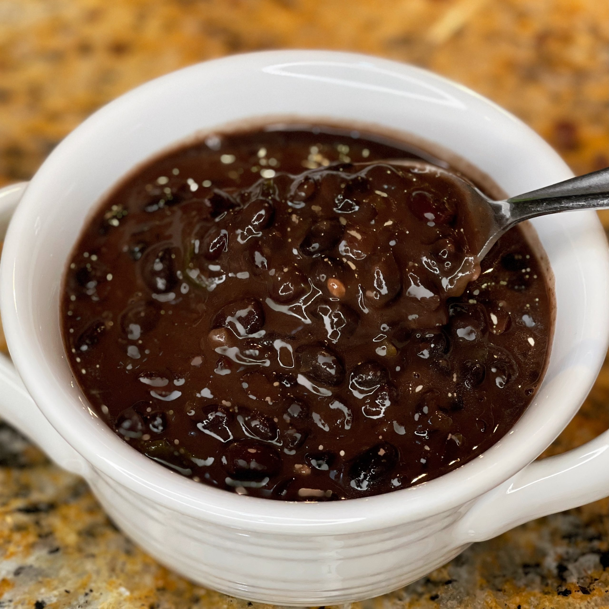

Frijoles Negros a la Emily

Cuban black beans, known as Frijoles Negros, is a classic dish that pairs well with white rice. Particularly popular on Christmas Eve and other celebrations. This latin favorite is sure to be a hit at your next holiday party!
Ingredients
- dried black beans, 16 oz
- chopped onion, 1
- green bell pepper, 1
- red bell pepper, 1
- garlic, minced, 1-2 tbsp
- olive oil
- white vinegar, 1/4 cup
- bay leaves, 2
- coriander, 1/2 tsp
- sazon completa
- salt and pepper
- sugar, 1 and 1/2 tbsp
- water, 8 cups
Steps
- Rinse beans in a strainer or colander under cold water. Discard any broken beans, discolored beans, or any beans that float to the top.
- Place the rinsed beans in a pressure cooker with the water, two bay leaves, and one tablespoon of olive oil. Again, discard any beans that float to the top at this stage. Close the pressure cooker and place it on high heat. Once the pressure cooker begins to steam, set timer for 30 minutes. Be careful to follow all relevant manufacturer's directions for your pressure cooker.
- Once complete, remove pressure cooker from heat and allow it to release steam until it reaches normal pressure. Do not drain the water from the cooked beans.
- While the beans cook, mince the onion, green pepper and garlic in a food processor until it a sauce-like paste. Chop the red pepper and set aside for later. In a separate pan, heat olive oil and sautee the vegetable paste until it thickens, and garlic begins to lightly brown. Ad salt, pepper, and sazon completa to the mix as it cooks.
- Add the vinegar, coriander, sauteed vegetable mix, chopped red pepper, and sugar to the beans in the water. Add salt, pepper, and sazon completa to taste. Mix then simmer on medium-low for 20-30 minutes.
- Optionally, drizzle olive oil and chopped white onions on top of the finished dish. Serve hot over white rice.